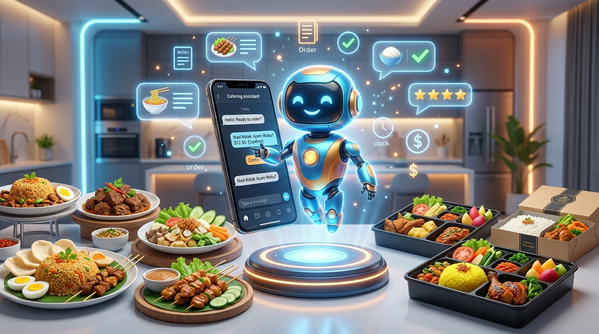

Arsitektur Hibrida Rule-Based & NLP
Menggabungkan ketegasan Rule-based system untuk formulir pesanan terstruktur dengan fleksibilitas Naïve Bayes & TF-IDF untuk mengenali variasi pertanyaan pelanggan secara cerdas.
Platform layanan pelanggan dan pemesanan katering makanan 24/7 otomatis tanpa hambatan instalasi aplikasi. Mengombinasikan sistem berbasis aturan untuk kepastian transaksi dengan kecerdasan buatan untuk pemahaman bahasa alami.
Akurasi Klasifikasi NLU
Rata-rata Respon Bot
Kenaikan Efisiensi CS

Disusun berdasarkan hasil riset ilmiah jurnal "Rancang Bangun Aplikasi Chatbot pada Catering Makanan" untuk memecahkan kendala keterbatasan SDM dan respon lambat pada UMKM.
Menggabungkan ketegasan Rule-based system untuk formulir pesanan terstruktur dengan fleksibilitas Naïve Bayes & TF-IDF untuk mengenali variasi pertanyaan pelanggan secara cerdas.
Pelanggan tidak perlu mengunduh aplikasi baru di Play Store atau App Store. Widget chatbot responsif berjalan mulus langsung di peramban web standar smartphone maupun komputer desktop.
Alur pemesanan sistematis memandu pengisian jenis paket menu, jumlah porsi, jadwal pengantaran, hingga alamat pengiriman dengan validasi input otomatis tanpa resiko data hilang.
Format pesanan yang telah tervalidasi dapat diteruskan secara otomatis ke aplikasi WhatsApp pengelola UMKM Bu Sumiyati untuk konfirmasi akhir, pembayaran, dan penjadwalan dapur.
Katalog dinamis untuk paket nasi kotak, prasmanan pesta, tumpeng syukuran, dan snack box dengan kalkulasi total estimasi biaya serta diskon kuantitas otomatis secara transparan.
Sistem dirancang dengan siklus Scrum dan dievaluasi menyeluruh melalui pengujian Whitebox (logika), Blackbox (fungsionalitas), serta User Acceptance Testing (UAT) konsumen nyata.
Klik pertanyaan contoh di bawah ini untuk melihat bagaimana kecerdasan buatan Naïve Bayes merespons percakapan seputar menu dan jadwal Catering Bu Sumiyati dalam hitungan detik.
Dirancang terpisah dan modular agar sistem ringan, mudah dipelihara, dan dapat diintegrasikan ke berbagai saluran pesan.
Widget peramban web responsif ramah pengguna (desktop & smartphone) dan dashboard administrator pengelola katering.
Mesin pemrosesan teks hibrida: klasifikasi intent Naïve Bayes, pembobotan TF-IDF, serta Dialog Manager untuk menjaga konteks alur.
Database penyimpanan katalog menu katering, harga, data transaksi, template respon jawaban, dan riwayat percakapan.
Jembatan API ke WhatsApp Messenger dan notifikasi SMS/Email untuk memastikan pesanan langsung diterima dapur tepat waktu.
Sesuai ketentuan penugasan, homepage ini menjadi halaman utama yang terhubung langsung dengan landing page analisis jurnal tugas sebelumnya dan landing page layanan.
Halaman komprehensif berbasis HTML5 Semantic murni yang membedah artikel publikasi "Rancang Bangun Aplikasi Chatbot pada Catering Makanan" (Jurnal Detika, 2025).
Halaman etalase konsumen untuk mitra studi kasus UMKM, menampilkan katalog menu prasmanan pesta, paket nasi kotak, dan panduan reservasi via chatbot.
Praktikum Pemrograman Berbasis Web (PAW) — Program Studi Teknologi Informasi, Universitas Muhammadiyah Yogyakarta
20200140100
Desain Homepage CSS Responsif, Media Query & Integrasi Navigasi
20240140233
Analisis Fitur Grid, Variabel :root & Evaluasi Kekuatan Sistem
20240140234
Penyusunan Konten Fitur Jurnal & Styling Komponen Interaktif
20240140002
Pengujian Layout Desktop & Mobile serta Verifikasi Aksesibilitas